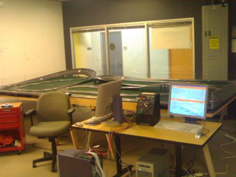
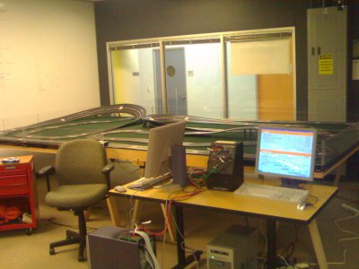
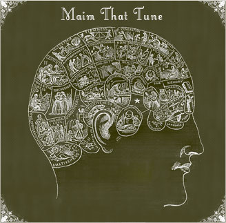

Pitchfork has an excellent feature article this week about music discovery tools: Better than we know ourselves. Feature author Chris Dahlen does an excellent job describing the history, state-of-the-art and the potential for music discovery tools to help us understand more about why we like the music that we do.
Monday May 22, 2006
Pitchfork has an excellent feature article this week about music discovery tools: Better than we know ourselves. Feature author Chris Dahlen does an excellent job describing the history, state-of-the-art and the potential for music discovery tools to help us understand more about why we like the music that we do.
Have you ever wondered what is on all of those iPods out there? I did a little study of some iPod data graciously provided by Mark Young of the iTunes Registry. The iTunes registry is a site where folks upload their iTunes usage data and see all sorts of aggregate statistics about what genres, artists and songs are popular. I was interested in looking at individual iPod usage patterns. This iTunes registry data was perfect for this. It had data for over 5,600 iPod users (anonymized of course). Now obviously this isn't exactly scientific. These were self-selecting users, who were geeky enough to want to upload their iTunes data to a website. They are probably not your typical iPod user (but its the best data I have). Here's what I found:
| Average collection size | 3,542 Songs |
| Average plays | 5568 |
| Average number of songs purchased from iTunes |
72 |
| Users with less than 100 songs | 7% |
| Active songs (80% of plays) | 23% |
| Largest Collection | 50,458 |
| Songs never played | 64% |
| Manually Rated songs | 17.00% |
The active songs statistic is one of the most interesting. For this statistic, I was interested in looking at what percentage of songs were part of the active rotation for a listener. So I looked to see what percentage of each user's collection was responsible for 80% of plays. It turns out that 80% of all plays are concentrated into just 23% of the tracks. Perhaps even more interesting is the fact that 64% of the over 20,000,000 tracks had never ever been played (not even once). This means that the average ipod user (with 3542 songs), actively listens to about 800 songs in their collection, and has never listened to about 2200 songs. I also looked to see if the folks who spent a lot of time rating their songs (5 stars, 1 star) tended to listen to more of their collection. Surprisingly, there was no correlation between frequent song rating and broader listening coverage. Frequent song raters have the same number of rarely listened to or never listened to songs on their iPod.
What does this all mean? One possible interpretation is that the tools that are out there for exploring and accessing our personal music collections are just not adequate. Shuffle play, smart playlists, click wheel scrolling through thousands of albums, and all the other ways you can select music on your iPod are just not adequate tools for dealing with our larger personal music collections. Clearly there's some opportunities here to improve the listening coverage of music listeners. The next generation portable music player is going to need to provide much better onboard tools to enable music exploration and discovery even within our own music collections.
Sunday May 21, 2006
(Most recent update: May 24, 2006)
In this 'web 2.0' world, people like to make mashups by making a web app that combines the data of two or more web services (note this shouldn't be confused with music mashups). There are plenty of music sites out there that provide public APIs that can be used for all sorts of purposes (for MIR researchers looking for music data, for web 2.0 developers trying to make the next killer music app, or the hobbyist, just for doing fun things). Here are some of my favorites:
In this 'web 2.0' world, people like to make mashups by making a web app that combines the data of two or more web services (note this shouldn't be confused with music mashups). There are plenty of music sites out there that provide public APIs that can be used for all sorts of purposes (for MIR researchers looking for music data, for web 2.0 developers trying to make the next killer music app, or the hobbyist, just for doing fun things). Here are some of my favorites:
- Amazon web services - a great place to go to collect all sorts of music metadata, including album art, editorial and customer reviews, track lists, popularity, similar items, release dates and all that. It is possible to crawl through the amazon catalog and collect information on thousands and thousands of CDs (and books and DVDs for that matter) in the course of a week or so (Amazon does request that you limit your requests to no more than one per second).
- MusicMobs - MusicMobs is playlist sharing and social tagging / recommendation music site. The site is built entirely on top of its public webservices API. This means that anything that MusicMobs can do with their data, you can do to. The have services for getting playlists, finding info about different artists, exploring the social tags applied by users. The documentation is not necessarily up-to-date but Toby (the site operator) is always ready to help.
- MusicStrands - MusicStrands is a social recommendation / discovery site. They've just released their first public version of OpenStrands, their web services API. This API includes catalog, recommendation playlist, tagging and community services (and it's free to registered users).
- last.fm - last.fm is probably the 'king' of the social recommenders out there. Last.fm (via AudioScrobbler) provides an API for getting user, artist, tag and group data. Here's an example of using the similar artists service.
- MusicBrainz - MusicBrainz is a community music metadatabase. They provide web services for all of the information in the database including artists, albums and tracks. MusicBrainz establishes a unique MusicBrainz ID for each track in its database (using MusicDNS fingerprinting technology).
- MusicDNS - which is run MusicIP (formerly Predixis) provides a music fingerprinting service that works with MusicBrainz.
- Rhapsody.com - Rhapsody is a music subscription service. The provide a number of RSS feeds that report top artists and albums as well as new releases, links to album art, track IDs (useful for playing the audio)
- WebJay (now part of yahoo). A playlist sharing site. Webjay provides APIs for creating, modifying and retrieving playlists.
- AOL Music- AOL music provides RSS feeds for their 'charts' such as the top songs, aritst, albums and playlists.
- Mp3Tunes
- Mp3Tunes is a music locker, a place for people to store their music
online so they can access it anywhere (at home, at work, on vacation),
without needing to carry it. They also have an index of about
50,000 songs that are freely available on the net (called sideload.com). The API allows for the syncing and streaming of music (to and from the locker). Added 5/24/06.
Monday May 15, 2006
KrazyDad (Jim Bumgarnder) has put together a rather compelling
visualization of the Whitney visual music box. Mesmerizing.
Its a flash thing ..: Check out the Whitney Music Box (First seen on digg).
Jeremy points out this latest article: Google Music: More Clues?
at ZDNet - that gives more information about the rumored Google Music
offering. If what this article describes is what Google delivers
it will be rather underwhelming.
Sunday May 14, 2006
In September in the Euskalduna Palace in bilbao, Euskadi, MusicStrands is organizing a Summer School on The Present and Future of Recommender Systems. The goal for the summer school is to bring together academic and industry researchers and practioners and to present, over two days, an in-depth interoduction to recommender systems. So far the speakers include folks from MusicStrands, Yahoo as well as academia. All of the current speakers are experts in collaborative filtering. No content-based experts (yet!). Looks to be an interesting affair.
Saturday May 13, 2006
There's a nifty summary of all of the JavaOne talks, demos, BOFs for Sun Labs projects here: Sun Labs, CTO, and Sun Labs Alumni @ JavaOne. Project DarkStar, Spot, Project DReaM are all well represented, but the slot car thing looks to be the most fun of all. (Image courtesy of Roumen's Weblog):


Friday May 12, 2006

Mog is a social music site, still in private beta. It looks like it will be similar to MySpace with a heavy music influence, as well as some automated recommender and user-to-user affinity matching.
The social music discovery space is starting to get quite crowded. Let's see how many we can name:
- last.fm
- MusicMobs
- MusicStrands
- Mercora
- WebJay
- ccMixterSoundFlavor
- upTo11.net
- plurn
- GenieLab
- Jamendo
- Muiso
- internet iTunes Registry
- Gnoosic
- SoundFlavor
- Gnoosic
Monday May 08, 2006
Wednesday May 03, 2006
Tom Conrad, CTO of Pandora, writes in his blog
that starting tonight Pandora will start to incorporate community
feedback into their system. Tom admits that sometimes the content-based
approach that Pandora has used up until now 'just got it terribly
wrong'. So to fix this, Pandora will use the listener ratings to
augment their content-based recommendations.
It will be very interesting to see where this goes. The content-based recommender approach that Pandora has taken up until now can avoid many of the pitfalls that plague collaborative filtering systems. Up until now, Pandora has been immune to popularity bias, recommender feedback loops and inertia that can plague systems like last.fm. (Just look at how many months the song 'Such Great Heights' been #1 or #2 at last.fm). Now as Pandora starts to mix in user data, they become more like last.fm, but without all of the last.fm goodness (no social browsing, no charts, no web services api, no song tagging). It seems to me that if you are going to 'go social' you need to do it all the way. Let me look at the Pandora charts to see what people are listening to. Let me find other listeners with similar listening tastes and see what they are listening to. - Thanks Jeremy for the tip!
It will be very interesting to see where this goes. The content-based recommender approach that Pandora has taken up until now can avoid many of the pitfalls that plague collaborative filtering systems. Up until now, Pandora has been immune to popularity bias, recommender feedback loops and inertia that can plague systems like last.fm. (Just look at how many months the song 'Such Great Heights' been #1 or #2 at last.fm). Now as Pandora starts to mix in user data, they become more like last.fm, but without all of the last.fm goodness (no social browsing, no charts, no web services api, no song tagging). It seems to me that if you are going to 'go social' you need to do it all the way. Let me look at the Pandora charts to see what people are listening to. Let me find other listeners with similar listening tastes and see what they are listening to. - Thanks Jeremy for the tip!
Some of the links in my current web reading rotation that involve music, and music discovery:
- MixedContent - interesting reading about current trends in digital music and music discovery.
- Sampled & Sorted - David Porter (director of business development at Live365) blogs about music, music discovery with an emphasis on the business side of things
- Save The Robot - Freelance writer Chris Dahlen writes about the intersection of business, technology and pop culture.
- Information aesthetics - fascinating blog on data visualizations and visual culture.
- DJ Alchemi- Excellent readings about music and music discovery, with a focus on the various web 2.0 music services.
- Yahoo Music Blog - musings from the folks behind Yahoo Music.
Monday May 01, 2006
... well, at least a trickle ...

Napster has revamped its offerings, now anyone can listen to any song for up to five plays for free (with their ad-supported streaming flash player). Napster is trying to make it easy for folks to exchange links and playlists, hoping for the network effect as users sharing playlists drive more listeners to Napster. This is a really good step for people interested in new music. With most online music services, you can listen to 30 second snippets of songs, which is not enough (at least for me) to decide if I want to buy a song, but five plays is enough. The real power though will come with the ability to share playlists. Right now there's no good way to share playlists with someone unless you both are members of the same subscription service. With the new Napster offering you'll be able to share Napster playlists with anyone (they still have to be Napster members, but there's no cost to register). This is a good step on the way to the 'celestial jukebox' when all music is available all the time and music flows like water does from the tap.
Napster has revamped its offerings, now anyone can listen to any song for up to five plays for free (with their ad-supported streaming flash player). Napster is trying to make it easy for folks to exchange links and playlists, hoping for the network effect as users sharing playlists drive more listeners to Napster. This is a really good step for people interested in new music. With most online music services, you can listen to 30 second snippets of songs, which is not enough (at least for me) to decide if I want to buy a song, but five plays is enough. The real power though will come with the ability to share playlists. Right now there's no good way to share playlists with someone unless you both are members of the same subscription service. With the new Napster offering you'll be able to share Napster playlists with anyone (they still have to be Napster members, but there's no cost to register). This is a good step on the way to the 'celestial jukebox' when all music is available all the time and music flows like water does from the tap.
Tuesday Apr 25, 2006
AudioBaba a
new music discovery service, calls itself the 'world's most
comprehensive music technology'. According to their web page
AudioBaba (while still in Beta) will generate playlists, give you new
music recommendations and give you a smart shuffle.

AudioBaba provides a content-based recommender combined with what they call a multi-layer human analysis, and of course they adapt their recommendations and playlists based upon your listening choices. Interestingly, AudioBaba shuns collaborative filtering completely because of the problems of popularity bias inherent in CF systems.
Right now AudioBaba recommends music from Nettwerk, an avant-garde Canadian record label, so it is not likely to be recommending main stream music.
Currently AudioBaba is in beta and only has a PC plugin which means that I can't try it out ... that's too bad, I'd really like to put AudioBaba through its paces, after trying many such systems I'm wondering how well the 'world's most comprehensive system' works. - thanks for the tip Zac
AudioBaba provides a content-based recommender combined with what they call a multi-layer human analysis, and of course they adapt their recommendations and playlists based upon your listening choices. Interestingly, AudioBaba shuns collaborative filtering completely because of the problems of popularity bias inherent in CF systems.
Right now AudioBaba recommends music from Nettwerk, an avant-garde Canadian record label, so it is not likely to be recommending main stream music.
Currently AudioBaba is in beta and only has a PC plugin which means that I can't try it out ... that's too bad, I'd really like to put AudioBaba through its paces, after trying many such systems I'm wondering how well the 'world's most comprehensive system' works. - thanks for the tip Zac
Wednesday Apr 12, 2006
It's inevitible. Your eating lunch, not bothering anyone, when one of your kids starts sing "it's a small world". Eight hours later, the wretched tune is still going through your head, driving you to the brink of madness. You have an earworm.
There's a simple cure. The site Maim that Tune, offers a free service guaranteed to rid you of that pesky earworm. Their approach is simple and effective. They simply infect you with another more malignant earworm that eliminates the current infection. Of course there's the risk that the new earworm will take up residence in your skull, but there's a cure for that ... just vist 'maim that tune' again to get an even more virilent strain ... soon you'll be visiting Maim that Tune every day to get your daily replacement Earworm.

Tuesday Apr 11, 2006
In the Wired article "Hell is Other People's Music", Momus describes the problem of being forced to listen to music other people love:
Thanks
to the combined influence of technology and marketing, songs are being
leveraged into every "blank" bit of space. ... Just as music
needs a backdrop of silence to signify, we need music-free
stretches to make music meaningful.
With tongue in cheek he suggests that technology can provide the answer:I personally dream of song-canceling technology; technology that can cancel whole singers, like Jack Johnson, or whole genres, like emo rock.
Finally, someone has thought up a use for all of those Artist Identification and Genre Classification
systems that MIR researchers have been working on for the last few
years. Imagine a little device that detects your set of
least favored music and outputs a cancelling signal like those noise
cancelling headphones can do ... no more Pina Colada song for me.
This blog copyright 2010 by plamere